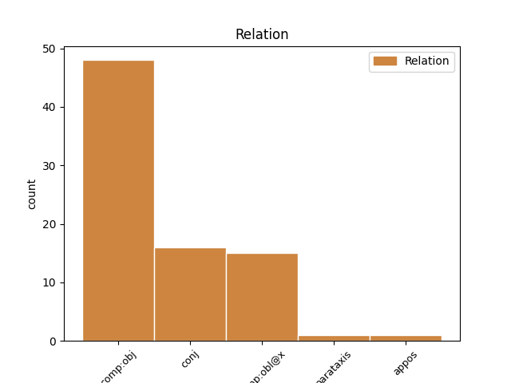
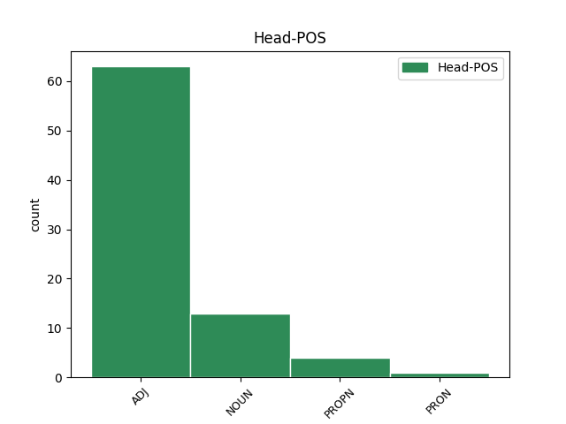
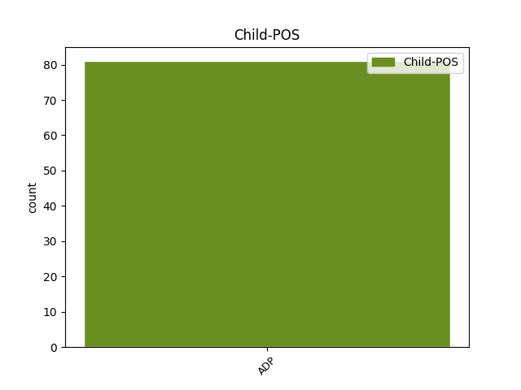

Distribution of features within this leaf



Agreement Rules sorted by frequency.
- When the dependent token is the direct object complements(comp:obj) of the head token, and the head token is ADJ and the dependent token is ADP.
1 Der _ _ _ _ 0 _ _ _
2 Schaden _ _ _ _ 0 _ _ _
3 an _ _ _ _ 0 _ _ _
4 den _ _ _ _ 0 _ _ _
5 für für ADP APPR AdpType=Prep|Case=Acc 8 comp:obj _ _
6 die _ _ _ _ 0 _ _ _
7 E-Mails _ _ _ _ 0 _ _ _
8 zuständigen zuständig ADJ ADJA Case=Acc|Degree=Pos|Gender=Masc|Number=Sing 0 _ _ _
9 Server _ _ _ _ 0 _ _ _
10 stellte _ _ _ _ 0 _ _ _
11 sich _ _ _ _ 0 _ _ _
12 in _ _ _ _ 0 _ _ _
13 der _ _ _ _ 0 _ _ _
14 Nacht _ _ _ _ 0 _ _ _
15 zum _ _ _ _ 0 _ _ _
16 Montag _ _ _ _ 0 _ _ _
17 als _ _ _ _ 0 _ _ _
18 schwerwiegender _ _ _ _ 0 _ _ _
19 heraus _ _ _ _ 0 _ _ _
20 als _ _ _ _ 0 _ _ _
21 zunächst _ _ _ _ 0 _ _ _
22 angenommen _ _ _ _ 0 _ _ _
23 - _ _ _ _ 0 _ _ _
24 Strato _ _ _ _ 0 _ _ _
25 orderte _ _ _ _ 0 _ _ _
26 noch _ _ _ _ 0 _ _ _
27 in _ _ _ _ 0 _ _ _
28 der _ _ _ _ 0 _ _ _
29 Nacht _ _ _ _ 0 _ _ _
30 eine _ _ _ _ 0 _ _ _
31 Ersatzmaschine _ _ _ _ 0 _ _ _
32 . _ _ _ _ 0 _ _ _
1 Biglobe _ _ _ _ 0 _ _ _
2 , _ _ _ _ 0 _ _ _
3 so _ _ _ _ 0 _ _ _
4 der _ _ _ _ 0 _ _ _
5 Name _ _ _ _ 0 _ _ _
6 der _ _ _ _ 0 _ _ _
7 Gesellschaft _ _ _ _ 0 _ _ _
8 , _ _ _ _ 0 _ _ _
9 hat _ _ _ _ 0 _ _ _
10 nach _ _ _ _ 0 _ _ _
11 Angaben _ _ _ _ 0 _ _ _
12 von _ _ _ _ 0 _ _ _
13 NEC _ _ _ _ 0 _ _ _
14 derzeit _ _ _ _ 0 _ _ _
15 rund _ _ _ _ 0 _ _ _
16 3,27 _ _ _ _ 0 _ _ _
17 Millionen _ _ _ _ 0 _ _ _
18 Kunden _ _ _ _ 0 _ _ _
19 und _ _ _ _ 0 _ _ _
20 sei _ _ _ _ 0 _ _ _
21 hinter _ _ _ _ 0 _ _ _
22 Nifty _ _ _ _ 0 _ _ _
23 , _ _ _ _ 0 _ _ _
24 einem _ _ _ _ 0 _ _ _
25 zu zu ADP APPR AdpType=Prep|Case=Dat 27 comp:obl@x _ _
26 Fujitsu _ _ _ _ 0 _ _ _
27 gehörenden gehörenden ADJ ADJA Case=Dat|Degree=Pos|Gender=Neut|Number=Sing 0 _ _ _
28 ISP _ _ _ _ 0 _ _ _
29 , _ _ _ _ 0 _ _ _
30 der _ _ _ _ 0 _ _ _
31 zweitgrößte _ _ _ _ 0 _ _ _
32 Internet-Anbieter _ _ _ _ 0 _ _ _
33 in _ _ _ _ 0 _ _ _
34 Japan _ _ _ _ 0 _ _ _
35 . _ _ _ _ 0 _ _ _
1 Siemens Siemens PROPN NE Case=Acc|Number=Sing|Person=3 0 _ _ _
2 " _ _ _ _ 0 _ _ _
3 auf auf ADP APPR AdpType=Prep|Case=Acc 1 appos _ _
4 Kurs _ _ _ _ 0 _ _ _
5 " _ _ _ _ 0 _ _ _
6 : _ _ _ _ 0 _ _ _
1 Nach _ _ _ _ 0 _ _ _
2 hartnäckigem _ _ _ _ 0 _ _ _
3 Insistieren _ _ _ _ 0 _ _ _
4 des _ _ _ _ 0 _ _ _
5 Ermittlers _ _ _ _ 0 _ _ _
6 räumte _ _ _ _ 0 _ _ _
7 Gates _ _ _ _ 0 _ _ _
8 ein _ _ _ _ 0 _ _ _
9 , _ _ _ _ 0 _ _ _
10 er _ _ _ _ 0 _ _ _
11 könne _ _ _ _ 0 _ _ _
12 sich _ _ _ _ 0 _ _ _
13 nicht _ _ _ _ 0 _ _ _
14 mehr _ _ _ _ 0 _ _ _
15 daran _ _ _ _ 0 _ _ _
16 erinnern _ _ _ _ 0 _ _ _
17 , _ _ _ _ 0 _ _ _
18 was was PRON PWS Case=Acc|Gender=Neut|Number=Sing|Person=3|PronType=Int 0 _ _ _
19 oder _ _ _ _ 0 _ _ _
20 an an ADP APPR AdpType=Prep|Case=Acc 18 conj _ _
21 wen _ _ _ _ 0 _ _ _
22 er _ _ _ _ 0 _ _ _
23 beim _ _ _ _ 0 _ _ _
24 Verfassen _ _ _ _ 0 _ _ _
25 des _ _ _ _ 0 _ _ _
26 Textes _ _ _ _ 0 _ _ _
27 gedacht _ _ _ _ 0 _ _ _
28 habe _ _ _ _ 0 _ _ _
29 . _ _ _ _ 0 _ _ _
1 In _ _ _ _ 0 _ _ _
2 einer _ _ _ _ 0 _ _ _
3 Erklärung _ _ _ _ 0 _ _ _
4 der _ _ _ _ 0 _ _ _
5 Uni _ _ _ _ 0 _ _ _
6 heißt _ _ _ _ 0 _ _ _
7 es _ _ _ _ 0 _ _ _
8 , _ _ _ _ 0 _ _ _
9 man _ _ _ _ 0 _ _ _
10 werde _ _ _ _ 0 _ _ _
11 Studenten _ _ _ _ 0 _ _ _
12 den _ _ _ _ 0 _ _ _
13 Zugriff _ _ _ _ 0 _ _ _
14 auf _ _ _ _ 0 _ _ _
15 die _ _ _ _ 0 _ _ _
16 Napster-Server _ _ _ _ 0 _ _ _
17 " _ _ _ _ 0 _ _ _
18 nur _ _ _ _ 0 _ _ _
19 für _ _ _ _ 0 _ _ _
20 offensichtlich _ _ _ _ 0 _ _ _
21 legale _ _ _ _ 0 _ _ _
22 Zwecke _ _ _ _ 0 _ _ _
23 von _ _ _ _ 0 _ _ _
24 speziell _ _ _ _ 0 _ _ _
25 dafür _ _ _ _ 0 _ _ _
26 bereitgestellten _ _ _ _ 0 _ _ _
27 Universitäts-Rechnern Rechner NOUN NN Case=Dat|Gender=Masc|Number=Plur|Person=3 0 _ _ _
28 aus _ _ _ _ 0 _ _ _
29 und _ _ _ _ 0 _ _ _
30 unter unter ADP APPR AdpType=Prep|Case=Dat 27 conj _ _
31 Aufsicht _ _ _ _ 0 _ _ _
32 von _ _ _ _ 0 _ _ _
33 Universtitäts-Personal _ _ _ _ 0 _ _ _
34 " _ _ _ _ 0 _ _ _
35 erlauben _ _ _ _ 0 _ _ _
36 . _ _ _ _ 0 _ _ _
1 Dem _ _ _ _ 0 _ _ _
2 widerspricht _ _ _ _ 0 _ _ _
3 jedoch _ _ _ _ 0 _ _ _
4 die _ _ _ _ 0 _ _ _
5 Tatsache _ _ _ _ 0 _ _ _
6 , _ _ _ _ 0 _ _ _
7 dass _ _ _ _ 0 _ _ _
8 für _ _ _ _ 0 _ _ _
9 die _ _ _ _ 0 _ _ _
10 Java _ _ _ _ 0 _ _ _
11 2 _ _ _ _ 0 _ _ _
12 Enterprise _ _ _ _ 0 _ _ _
13 Edition _ _ _ _ 0 _ _ _
14 ( _ _ _ _ 0 _ _ _
15 J2EE _ _ _ _ 0 _ _ _
16 ) _ _ _ _ 0 _ _ _
17 , _ _ _ _ 0 _ _ _
18 die _ _ _ _ 0 _ _ _
19 J2SE _ _ _ _ 0 _ _ _
20 um _ _ _ _ 0 _ _ _
21 Enterprise _ _ _ _ 0 _ _ _
22 Java _ _ _ _ 0 _ _ _
23 Beans _ _ _ _ 0 _ _ _
24 , _ _ _ _ 0 _ _ _
25 das _ _ _ _ 0 _ _ _
26 Java Java PROPN NE Case=Acc|Number=Sing|Person=3 0 _ _ _
27 Servlet _ _ _ _ 0 _ _ _
28 API _ _ _ _ 0 _ _ _
29 und _ _ _ _ 0 _ _ _
30 um um ADP APPR AdpType=Prep|Case=Acc 26 conj _ _
31 Java _ _ _ _ 0 _ _ _
32 Server _ _ _ _ 0 _ _ _
33 Pages _ _ _ _ 0 _ _ _
34 erweitert _ _ _ _ 0 _ _ _
35 , _ _ _ _ 0 _ _ _
36 und _ _ _ _ 0 _ _ _
37 für _ _ _ _ 0 _ _ _
38 die _ _ _ _ 0 _ _ _
39 auf _ _ _ _ 0 _ _ _
40 Konsumergeräte _ _ _ _ 0 _ _ _
41 wie _ _ _ _ 0 _ _ _
42 Handys _ _ _ _ 0 _ _ _
43 , _ _ _ _ 0 _ _ _
44 Handhelds _ _ _ _ 0 _ _ _
45 und _ _ _ _ 0 _ _ _
46 Set _ _ _ _ 0 _ _ _
47 Top _ _ _ _ 0 _ _ _
48 Boxen _ _ _ _ 0 _ _ _
49 zugeschnittene _ _ _ _ 0 _ _ _
50 Java _ _ _ _ 0 _ _ _
51 2 _ _ _ _ 0 _ _ _
52 Micro _ _ _ _ 0 _ _ _
53 Edition _ _ _ _ 0 _ _ _
54 ( _ _ _ _ 0 _ _ _
55 J2ME _ _ _ _ 0 _ _ _
56 ) _ _ _ _ 0 _ _ _
57 nach _ _ _ _ 0 _ _ _
58 wie _ _ _ _ 0 _ _ _
59 vor _ _ _ _ 0 _ _ _
60 Lizenzgebühren _ _ _ _ 0 _ _ _
61 anfallen _ _ _ _ 0 _ _ _
62 . _ _ _ _ 0 _ _ _
Disagree Examples:
1 Die _ _ _ _ 0 _ _ _
2 derzeit _ _ _ _ 0 _ _ _
3 im im ADP APPRART AdpType=Prep|Case=Dat|PronType=Art 5 comp:obj _ _
4 Fernsehen _ _ _ _ 0 _ _ _
5 gesendeten senden ADJ ADJA Case=Nom|Degree=Pos|Gender=Masc|Number=Plur 0 _ _ _
6 Werbespots _ _ _ _ 0 _ _ _
7 ( _ _ _ _ 0 _ _ _
8 " _ _ _ _ 0 _ _ _
9 Wenn _ _ _ _ 0 _ _ _
10 alles _ _ _ _ 0 _ _ _
11 im _ _ _ _ 0 _ _ _
12 Leben _ _ _ _ 0 _ _ _
13 so _ _ _ _ 0 _ _ _
14 einfach _ _ _ _ 0 _ _ _
15 wäre _ _ _ _ 0 _ _ _
16 ... _ _ _ _ 0 _ _ _
17 " _ _ _ _ 0 _ _ _
18 ) _ _ _ _ 0 _ _ _
19 laufen _ _ _ _ 0 _ _ _
20 zwar _ _ _ _ 0 _ _ _
21 in _ _ _ _ 0 _ _ _
22 der _ _ _ _ 0 _ _ _
23 Tat _ _ _ _ 0 _ _ _
24 aus _ _ _ _ 0 _ _ _
25 , _ _ _ _ 0 _ _ _
26 dies _ _ _ _ 0 _ _ _
27 sei _ _ _ _ 0 _ _ _
28 aber _ _ _ _ 0 _ _ _
29 von _ _ _ _ 0 _ _ _
30 vorneherein _ _ _ _ 0 _ _ _
31 so _ _ _ _ 0 _ _ _
32 geplant _ _ _ _ 0 _ _ _
33 gewesen _ _ _ _ 0 _ _ _
34 . _ _ _ _ 0 _ _ _
1 Die _ _ _ _ 0 _ _ _
2 einzelnen _ _ _ _ 0 _ _ _
3 aus aus ADP APPR AdpType=Prep|Case=Dat 5 comp:obj _ _
4 Java-Modulen _ _ _ _ 0 _ _ _
5 bestehenden bestehenden ADJ ADJA Case=Nom|Degree=Pos|Gender=Neut|Number=Plur 0 _ _ _
6 Programme _ _ _ _ 0 _ _ _
7 und _ _ _ _ 0 _ _ _
8 Anwendungen _ _ _ _ 0 _ _ _
9 sollen _ _ _ _ 0 _ _ _
10 dann _ _ _ _ 0 _ _ _
11 über _ _ _ _ 0 _ _ _
12 die _ _ _ _ 0 _ _ _
13 eingebaute _ _ _ _ 0 _ _ _
14 Java-kompatible _ _ _ _ 0 _ _ _
15 Hardware-Plattform _ _ _ _ 0 _ _ _
16 heruntergeladen _ _ _ _ 0 _ _ _
17 werden _ _ _ _ 0 _ _ _
18 können _ _ _ _ 0 _ _ _
19 . _ _ _ _ 0 _ _ _
1 Ein _ _ _ _ 0 _ _ _
2 Farb-LCD _ _ _ _ 0 _ _ _
3 , _ _ _ _ 0 _ _ _
4 das _ _ _ _ 0 _ _ _
5 als _ _ _ _ 0 _ _ _
6 Touch _ _ _ _ 0 _ _ _
7 Screen _ _ _ _ 0 _ _ _
8 ausgeführt _ _ _ _ 0 _ _ _
9 ist _ _ _ _ 0 _ _ _
10 , _ _ _ _ 0 _ _ _
11 wird _ _ _ _ 0 _ _ _
12 von _ _ _ _ 0 _ _ _
13 einer _ _ _ _ 0 _ _ _
14 einklappbaren _ _ _ _ 0 _ _ _
15 Tastatur _ _ _ _ 0 _ _ _
16 ergänzt _ _ _ _ 0 _ _ _
17 ; _ _ _ _ 0 _ _ _
18 dazu _ _ _ _ 0 _ _ _
19 kommt _ _ _ _ 0 _ _ _
20 ein _ _ _ _ 0 _ _ _
21 integriertes _ _ _ _ 0 _ _ _
22 drahtloses _ _ _ _ 0 _ _ _
23 Telefon _ _ _ _ 0 _ _ _
24 , _ _ _ _ 0 _ _ _
25 das _ _ _ _ 0 _ _ _
26 nach _ _ _ _ 0 _ _ _
27 Angaben _ _ _ _ 0 _ _ _
28 von _ _ _ _ 0 _ _ _
29 Solopoint _ _ _ _ 0 _ _ _
30 direkt _ _ _ _ 0 _ _ _
31 Telefonnummern _ _ _ _ 0 _ _ _
32 des _ _ _ _ 0 _ _ _
33 eingebauten _ _ _ _ 0 _ _ _
34 elektronischen _ _ _ _ 0 _ _ _
35 Adressbuchs Buch NOUN NN Case=Gen|Gender=Neut|Number=Sing|Person=3 0 _ _ _
36 und _ _ _ _ 0 _ _ _
37 von von ADP APPR AdpType=Prep|Case=Dat 35 conj _ _
38 Internet-Seiten _ _ _ _ 0 _ _ _
39 wählen _ _ _ _ 0 _ _ _
40 kann _ _ _ _ 0 _ _ _
41 . _ _ _ _ 0 _ _ _
1 Die _ _ _ _ 0 _ _ _
2 mit mit ADP APPR AdpType=Prep|Case=Dat 5 comp:obj _ _
3 solchen _ _ _ _ 0 _ _ _
4 Aufgaben _ _ _ _ 0 _ _ _
5 betrauten betrauen ADJ ADJA Case=Nom|Degree=Pos|Number=Plur 0 _ _ _
6 Polizeibeamten _ _ _ _ 0 _ _ _
7 sollen _ _ _ _ 0 _ _ _
8 daher _ _ _ _ 0 _ _ _
9 über _ _ _ _ 0 _ _ _
10 " _ _ _ _ 0 _ _ _
11 umfangreiche _ _ _ _ 0 _ _ _
12 Kenntnisse _ _ _ _ 0 _ _ _
13 aus _ _ _ _ 0 _ _ _
14 dem _ _ _ _ 0 _ _ _
15 Bereich _ _ _ _ 0 _ _ _
16 der _ _ _ _ 0 _ _ _
17 Informationstechnologien _ _ _ _ 0 _ _ _
18 " _ _ _ _ 0 _ _ _
19 verfügen _ _ _ _ 0 _ _ _
20 . _ _ _ _ 0 _ _ _
1 Während _ _ _ _ 0 _ _ _
2 Drittanbieter _ _ _ _ 0 _ _ _
3 AOLs _ _ _ _ 0 _ _ _
4 Instant _ _ _ _ 0 _ _ _
5 Messenger _ _ _ _ 0 _ _ _
6 durch _ _ _ _ 0 _ _ _
7 neue _ _ _ _ 0 _ _ _
8 Module _ _ _ _ 0 _ _ _
9 zur _ _ _ _ 0 _ _ _
10 MP3-Tauschbörse _ _ _ _ 0 _ _ _
11 machen _ _ _ _ 0 _ _ _
12 wollen _ _ _ _ 0 _ _ _
13 , _ _ _ _ 0 _ _ _
14 kündigt _ _ _ _ 0 _ _ _
15 der _ _ _ _ 0 _ _ _
16 Online-Dienst _ _ _ _ 0 _ _ _
17 selbst _ _ _ _ 0 _ _ _
18 derweil _ _ _ _ 0 _ _ _
19 an _ _ _ _ 0 _ _ _
20 , _ _ _ _ 0 _ _ _
21 die _ _ _ _ 0 _ _ _
22 MP3-Suchmaschine _ _ _ _ 0 _ _ _
23 von _ _ _ _ 0 _ _ _
24 der _ _ _ _ 0 _ _ _
25 Website _ _ _ _ 0 _ _ _
26 des _ _ _ _ 0 _ _ _
27 zum zum ADP APPRART AdpType=Prep|Case=Dat|PronType=Art 29 comp:obj _ _
28 Konzern _ _ _ _ 0 _ _ _
29 gehörenden gehörenden ADJ ADJA Case=Gen|Degree=Pos|Gender=Neut|Number=Sing 0 _ _ _
30 Unternehmens _ _ _ _ 0 _ _ _
31 Nullsoft _ _ _ _ 0 _ _ _
32 zu _ _ _ _ 0 _ _ _
33 entfernen _ _ _ _ 0 _ _ _
34 . _ _ _ _ 0 _ _ _